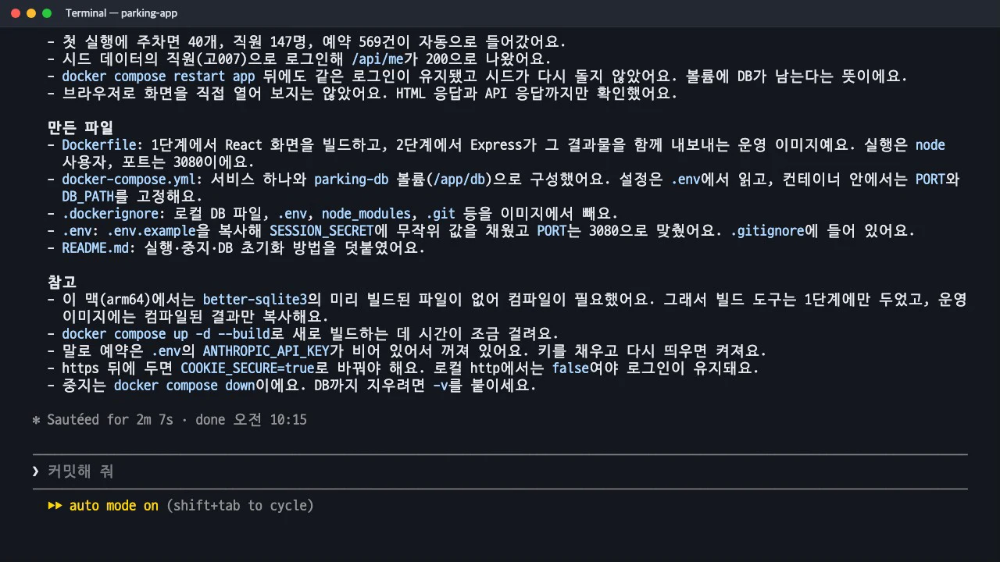
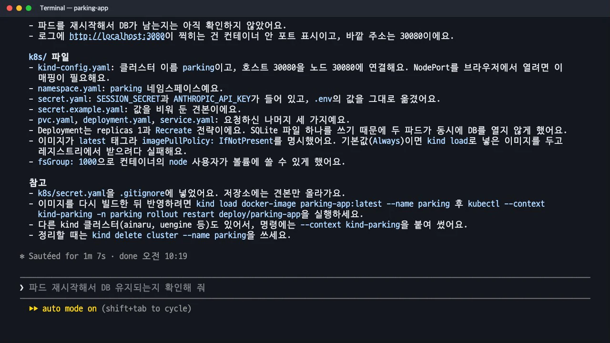
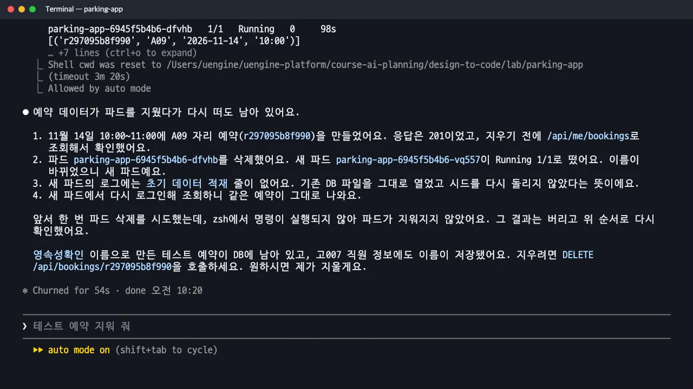
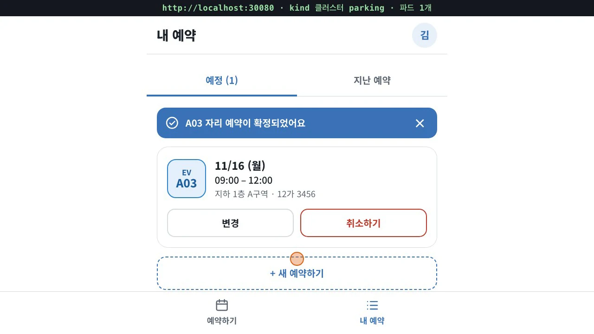
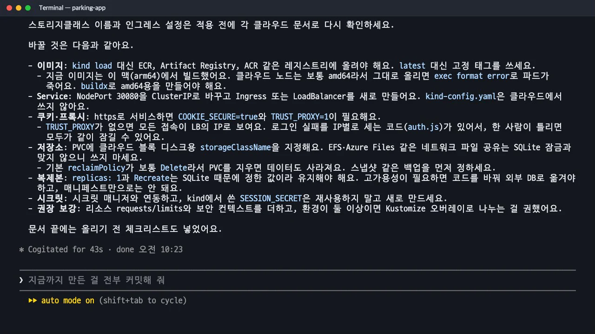

4장에서 만든 주차장 앱을 Claude Code로 컨테이너에 담습니다.
docker compose up한 번으로 언제든 띄울 수 있게 하고, 같은 이미지를 로컬 쿠버네티스(kind) 클러스터에 배포해 브라우저에서 예약까지 해 봅니다. 마지막으로 클라우드 쿠버네티스로 옮길 때 무엇이 달라지는지 정리하게 합니다.
무엇을 · 왜#
지금까지 앱은 npm run dev로 개발자 컴퓨터에서만 실행됐습니다. 다른 사람이 같은 앱을 띄우려면 Node.js 버전, 네이티브 모듈 컴파일, 환경 변수, DB 파일 위치까지 똑같이 맞춰야 합니다. 컨테이너는 이 실행 환경을 이미지 하나에 담습니다.
| 단계 | 도구 | 얻는 것 |
|---|---|---|
| 컨테이너 | Docker Compose | 어느 컴퓨터에서나 docker compose up 한 번으로 실행, DB는 볼륨에 보존 |
| 오케스트레이션 | 쿠버네티스(kind) | 파드가 종료되면 다시 실행하고, 디스크(PVC)와 비밀 값(Secret)을 따로 관리 |
| 클라우드 | EKS·GKE·AKS | 실제 서비스. 이 장에서는 바꿀 점만 문서로 정리 |
kind(Kubernetes in Docker)는 Docker 컨테이너 안에 쿠버네티스 클러스터를 만드는 도구입니다. 클라우드 계정 없이도 실제 쿠버네티스 매니페스트를 시험할 수 있습니다.
따라 하기#
실습 폴더(parking-app)에서 claude를 새로 열고 차례로 요청했습니다. Claude Code 2.1.323(Sonnet 5.5), Docker 29.1, kind 0.30을 썼습니다.
- Docker Compose. 2분 7초 만에 Dockerfile,
docker-compose.yml,.dockerignore가 생기고, Claude가 직접 띄워 확인까지 했습니다. 첫 실행에 주차면 40개, 직원 147명, 10월 예약 569건이 자동으로 들어갔고,docker compose restart app뒤에도 로그인이 유지되고 시드가 다시 실행되지 않는 것으로 DB가 볼륨에 남는 것을 확인했습니다.
Docker Compose 단계 보고: 확인한 것과 만든 파일 이 앱을 Docker Compose로 언제든 실행할 수 있게 만들어 줘. 화면을 빌드해서 Express 서버가 함께 내보내는 운영 모드로, 컨테이너 하나와 SQLite DB 파일을 담을 볼륨으로 구성해 줘. SESSION_SECRET 같은 설정은 .env 에서 읽고, docker compose up 한 번이면 http://localhost:3080 으로 열리게 해 줘. 다 만들면 직접 띄워서 확인해 줘. - kind 클러스터에 배포. 1분 7초 뒤
parking클러스터가 만들어지고 파드가1/1 Running이 되었습니다. 이미지는 레지스트리 없이kind load docker-image로 노드에 넣었습니다.
kind 배포 보고: 파드·서비스·PVC 상태와 k8s 파일 이제 같은 이미지를 로컬 kind 쿠버네티스 클러스터에 배포해 줘. 클러스터 이름은 parking 으로 새로 만들고, 이미지는 kind load 로 넣어 줘. 매니페스트는 k8s/ 폴더에 Namespace, Secret, PersistentVolumeClaim, Deployment, Service 로 나눠 쓰고, 브라우저에서 http://localhost:30080 으로 열리게 해 줘. 배포가 끝나면 파드 상태와 접속 주소를 보여 줘. - 파드가 바뀌어도 데이터가 남는지. Claude는 보고에서 "파드를 재시작해서 DB가 남는지는 아직 확인하지 않았다"고 스스로 밝혔습니다. 그래서 따로 확인하도록 했습니다. 시험 예약을 하나 만들고 파드를 지우자 이름이 다른 새 파드가 실행됐고, 새 파드의 로그에는 초기 데이터 적재 줄이 없었으며, 다시 로그인해 조회하니 같은 예약이 그대로 있었습니다. 확인이 끝난 뒤 시험 예약과 바뀐 직원 정보는 지우게 했습니다.
파드를 지웠다가 다시 떠도 예약 데이터가 남는지 확인해 줘
파드를 지웠다 다시 띄워도 예약이 남은 것을 확인한 보고 - 브라우저로 열기.
http://localhost:30080에서 사번으로 로그인해 11월 16일 09:00~12:00 A03 자리를 예약하고, 내 예약에서 확인한 뒤 취소했습니다. 5장과 같은 화면이 쿠버네티스 위에서 그대로 동작합니다.
kind 클러스터의 앱(localhost:30080)에서 예약을 확정한 화면 - 클라우드로 옮길 때. 실제 클라우드 배포는 하지 않고, 바꿀 점만
k8s/CLOUD.md에 정리하게 했습니다.이 k8s/ 매니페스트를 EKS·GKE·AKS 같은 클라우드 쿠버네티스에 올리려면 무엇을 바꿔야 하는지 k8s/CLOUD.md 에 정리해 줘. 실제 클라우드 배포는 하지 마.
CLOUD.md 를 쓴 뒤의 요약: 클라우드로 옮길 때 바꿀 것
산출물#
① Dockerfile(2단계 빌드). 1단계에서 의존성을 설치하고 React 화면을 빌드합니다. better-sqlite3는 네이티브 모듈이라 이 Mac(arm64)에서는 미리 빌드된 파일이 없어 컴파일이 필요했고, 그래서 컴파일 도구(python3, make, g++)는 1단계에만 둡니다. 2단계 운영 이미지에는 빌드 결과만 복사하고 node 사용자로 실행합니다.
FROM node:22-bookworm-slim AS build
RUN apt-get update && apt-get install -y --no-install-recommends python3 make g++ ...
RUN npm ci
RUN npm run build && npm prune --omit=dev
FROM node:22-bookworm-slim
ENV NODE_ENV=production PORT=3080 DB_PATH=/app/db/parking.db
COPY --from=build /app/web/dist web/dist
USER node
VOLUME /app/db
② docker-compose.yml. 서비스 하나와 parking-db 볼륨으로 구성합니다. 설정은 .env에서 읽고, 컨테이너 안의 PORT·DB_PATH는 고정합니다. 종료할 때는 docker compose down, DB까지 지우려면 -v를 붙입니다.
③ k8s/ 매니페스트.
| 파일 | 내용 | 이렇게 정한 이유 |
|---|---|---|
kind-config.yaml |
호스트 30080 ↔ 노드 30080 연결 | kind 노드는 컨테이너라 NodePort를 브라우저에서 열려면 이 연결이 필요 |
namespace.yaml |
parking 네임스페이스 |
다른 앱과 섞이지 않게 |
secret.yaml |
SESSION_SECRET, ANTHROPIC_API_KEY |
.gitignore에 넣고 값을 비운 secret.example.yaml만 저장소에 |
pvc.yaml |
1Gi, ReadWriteOnce | SQLite 파일을 담을 디스크 |
deployment.yaml |
replicas: 1, strategy: Recreate, imagePullPolicy: IfNotPresent, fsGroup: 1000 |
SQLite 파일 하나를 두 파드가 동시에 열지 않게 1개·Recreate. latest 태그의 기본값(Always)이면 kind load한 이미지를 두고 레지스트리에서 받으려다 실패 |
service.yaml |
NodePort 3080 → 30080 | 브라우저에서 localhost:30080 |
④ k8s/CLOUD.md. 클라우드로 옮길 때 바꿀 것을 표와 체크리스트로 정리했습니다.
| 바꿀 것 | kind | 클라우드 |
|---|---|---|
| 이미지 | kind load, latest |
ECR·Artifact Registry·ACR에 올리고 고정 태그. arm64로 빌드한 이미지는 amd64 노드에서 exec format error → buildx로 amd64 빌드 |
| 접속 | NodePort 30080 | ClusterIP + Ingress(또는 LoadBalancer), kind-config.yaml은 쓰지 않음 |
| 쿠키·프록시 | COOKIE_SECURE=false |
https면 COOKIE_SECURE=true, TRUST_PROXY=1 |
| 저장소 | 기본 standard |
클라우드 블록 디스크. EFS·Azure Files 같은 네트워크 파일 공유는 SQLite 잠금과 맞지 않음 |
| 복제본 | 1개, Recreate | 그대로 유지. 고가용성이 필요하면 코드를 고쳐 외부 DB로 |
| 비밀 값 | 파일로 적용 | 시크릿 매니저 연동, SESSION_SECRET은 새로 |
Claude가 스스로 밝힌 「안 한 것」을 따라가세요
Compose 단계 보고에는 "브라우저로 화면을 직접 열어 보지는 않았다", kind 단계 보고에는 "파드를 재시작해서 DB가 남는지는 아직 확인하지 않았다"가 있었습니다. 이 두 줄이 다음에 확인할 항목입니다. 이 실습에서는 둘 다 따로 확인했고, CLOUD.md는 "클러스터에 적용해 확인한 것이 아니다"라고 문서 첫머리에 적어 두었습니다.
다 쓴 뒤 정리
docker compose down -v로 Compose 컨테이너와 볼륨을, kind delete cluster --name parking으로 kind 클러스터를 지웁니다. 다른 kind 클러스터가 있는 컴퓨터라면 Claude처럼 명령마다 --context kind-parking을 붙여 엉뚱한 클러스터를 건드리지 않게 하세요.
확인 문제#
Deployment의 `replicas`를 2로 늘리면 왜 안 되나요?
이 앱은 SQLite 파일 하나를 DB로 씁니다. 파드 두 개가 같은 파일을 동시에 열면 잠금이 맞지 않아 데이터가 깨질 수 있고, ReadWriteOnce 디스크는 보통 한 노드에만 붙습니다. 그래서 1개로 고정하고, 새 파드를 띄우기 전에 기존 파드를 먼저 종료하는 Recreate 전략을 썼습니다. 여러 개로 늘리려면 코드를 고쳐 외부 DB(PostgreSQL 등)로 옮겨야 합니다.
Mac에서 만든 이미지를 그대로 클라우드에 올리면 무슨 일이 생기나요?
Apple Silicon Mac은 arm64 이미지를 만들고, 클라우드 노드는 보통 amd64입니다. 그대로 올리면 파드가 exec format error로 시작하지 못합니다. docker buildx build --platform linux/amd64,linux/arm64처럼 노드 아키텍처에 맞게 빌드해야 하고, better-sqlite3 같은 네이티브 모듈은 빌드 단계에서 아키텍처별로 다시 컴파일됩니다.
파드를 지웠는데도 예약이 남은 것은 어떤 설정 덕분인가요?
DB 파일 경로(/app/db)를 PersistentVolumeClaim(parking-db)에 붙였기 때문입니다. 파드는 새로 만들어져도 같은 PVC를 다시 연결하므로 파일이 그대로 남습니다. 새 파드의 로그에 초기 데이터 적재 줄이 없었던 것도 기존 DB를 그대로 열었다는 증거입니다.
다음 교재#
여기까지는 화면을 보고 바로 만들었습니다. 다음 교재 Claude Code × Spec Kit 핸즈온에서는 구현 전에 사양을 문서로 정리하고, 모호한 부분을 정해진 기준으로 묻고, 작업을 나눠 에이전트에게 맡깁니다.